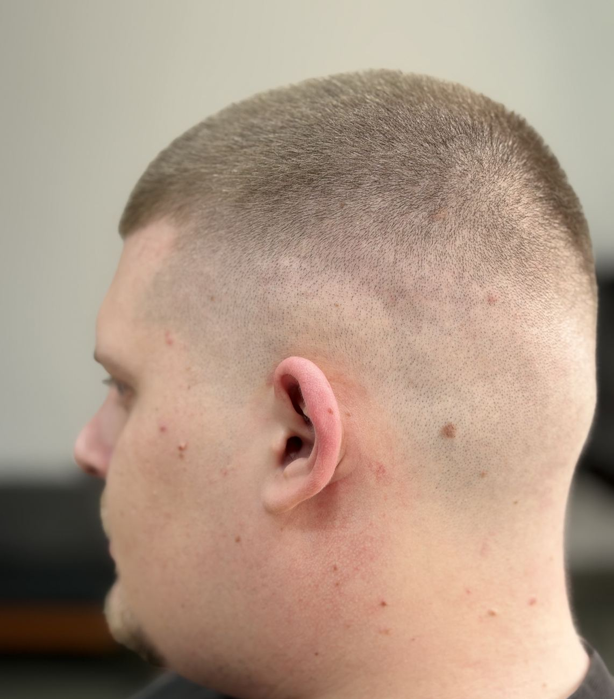

Tuns clasic, cu finisaj curat. Spălarea e opțională, la 15 lei.
LUNI - VINERI 10:00 - 19:00★ 4.98 / 434 EVALUĂRI PE MERO +
STUDIOBARBERAlex Sima.
Tunsori precise, fade-uri curate și grijă pentru barbă, în Brașov.

01 / FADE & BARBĂEXPLOREAZĂ PORTOFOLIUL
SKIN FADECROP FADETUNS + BARBĂVIP EXPERIENCECAFEA DIN PARTEA CASEI
01 / DESPRE STUDIO
Tehnică clasică.
Fade-uri moderne.
Alex Sima Barber Studio e o frizerie pentru bărbați din Brașov, unde tehnicile clasice se întâlnesc cu cele moderne. Tunsori curate, fade-uri precise și îngrijire pentru barbă, într-un studio liniștit, fără aglomerație.

MÂINI SIGURE. TEHNICĂ DE TOP.
01
Discutăm.
Ne uităm împreună la forma capului, la direcția părului și la ce porți de obicei.
02
Lucrăm precis.
Tranziții curate, contur atent și textură acolo unde trebuie, cu foarfeca, mașina și briciul.
03
Vezi serviciile Finisăm.
Styling final și câteva sfaturi, ca look-ul să arate la fel de bine și acasă.
02 / SERVICII ȘI PREȚURIPREȚURI DE PE MERO.
FRESH CUT.
OLD SCHOOL.
De la un tuns clasic la ritualul complet, cu spălare, masaj și barbă.

MADE AT ALEX SIMA01 / 04
03 / PORTOFOLIU @ALEXSIMABARBERSTUDIO
LUCRAT
cu atenție.
Fade-uri, texturi și barbă,
direct din scaunul studioului.
01 / 11
Crop fade
FADE-URI / ALEX SIMACLICK PE CADRUL CENTRAL PENTRU A-L MĂRI PE MOBIL, GLISEAZĂ STÂNGA SAU DREAPTA


04 / STUDIOULLINIȘTE. PARCARE. CAFEA.
STRADA NEPTUN 30CAFEAUA
CAFEAUA
E PE CASĂ.
Fade-ul
E PE BUNE.
Studioul e pe Strada Neptun 30, într-o zonă liniștită, departe de aglomerația bulevardelor. Ai loc de parcare chiar lângă frizerie, iar cafeaua și o băutură sunt din partea casei. Intrarea se face prin stânga clădirii.
Vezi-ne pe Instagram
prin stânga clădirii.
05 / PROGRAMĂRICALENDARUL MERO, ÎN TIMP REAL.
LOCUL TĂU
te așteaptă.
Alege serviciul aici, apoi ziua și ora direct în calendarul MERO al studioului. Vezi doar orele libere, iar programarea se confirmă pe telefon.
06 / TE AȘTEPTĂM
NE VEDEM
PE NEPTUN.
Loc de parcare, liniște
și o cafea bună.
Strada Neptun 30, Brașov 500352
Intrarea se face prin stânga clădirii
- Luni - vineri
- 10:00 - 19:00
- Sâmbătă
- 10:30 - 17:30
- Duminică
- Închis
Programările se fac pe MERO. Pentru întrebări, sună-ne.
ALEX SIMA / BRAȘOV
Deschide traseul în Google Maps